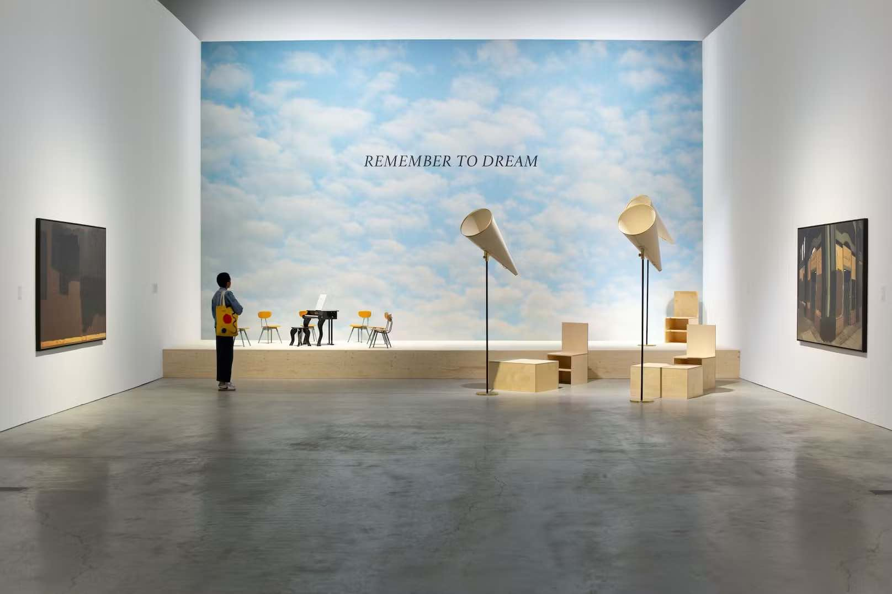
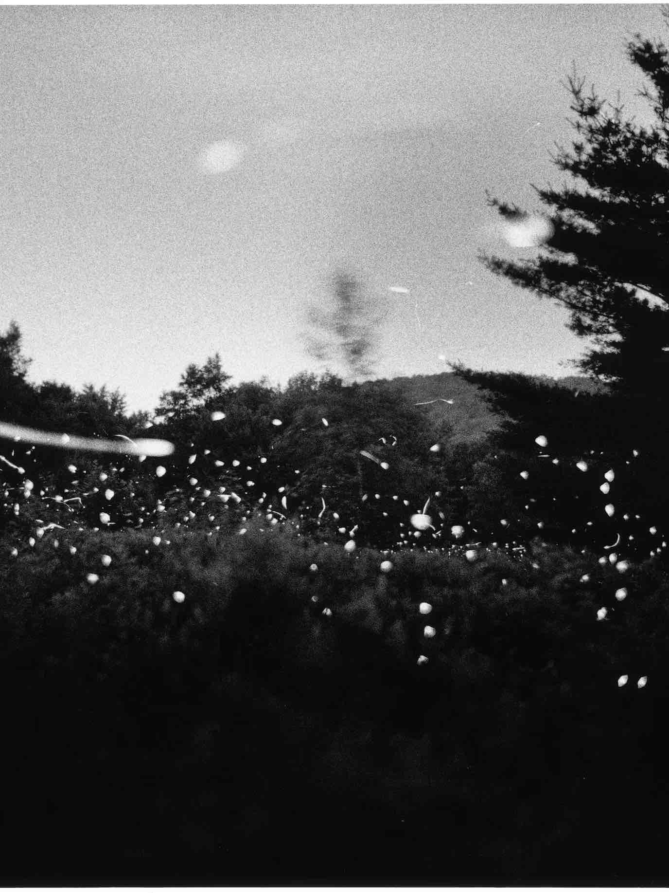

Forget the Roman amphitheater built in 90 A.D., or the Yellow House, where in 1888 Vincent Van Gogh and Paul Gauguin devolved into roommates from hell. Arles in the summer turns into a mecca for contemporary art, especially photography—and its glorious past recedes into a backdrop for the ferment of the present. For over half a century, the summer festival known as the Rencontres d’Arles has showcased photography, old and new, in churches and galleries throughout the town. Running this season until September 24, the Rencontres—in one of its numerous sites, the Archbishop’s Palace—is offering a retrospective of the late American artist Saul Leiter, a pioneer of color photography. Across town, an exhibition of three series by Gregory Crewdson, best known for the pictures he stages with an elaborate film crew, includes his seldom-seen early work, “Fireflies” (1996), in which the eponymous insects twinkle in black-and-white.
The Artist
Along with familiar names, the Rencontres features encounters (as its French name indicates) with new artists. I discovered the moody portraits by Stockholm native Hannah Modigh in a show of “Contemporary Nordic Photography,” and evocations of Southern California’s expatriate Iranian community (including cassette boxes of music tapes) in the series, “Soleil of Persian Square,” by Hannah Darabi. “Discovery” is both the purpose and the name of the Rencontres exhibition of ten emerging photographers (not all of them young) sponsored by the Louis Roederer Foundation. It is organized by New Delhi-based independent curator Tanvi Mishra and exhibited in the commodious Église des Frères-Prêcheurs. Four hundred photographers applied for ten slots in a juried competition, which was won by Isadora Romero, 36, an Ecuadoran who travels through Latin America in search of seeds of ancient food crops that are in danger of extinction. Along with conventional photographs, Romero created a series of six cyanotypes printed on Oaxacan tortillas—charting the progression of corn from teosinte, its ancient wild progenitor, to an imagined future corn that is artificially generated..